First Impressions Matter
Styling Data Products People Actually Want To Use
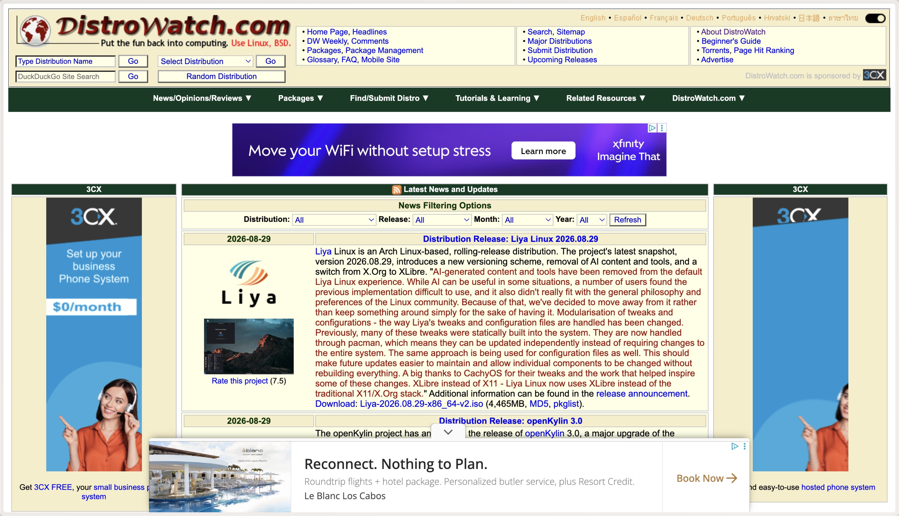
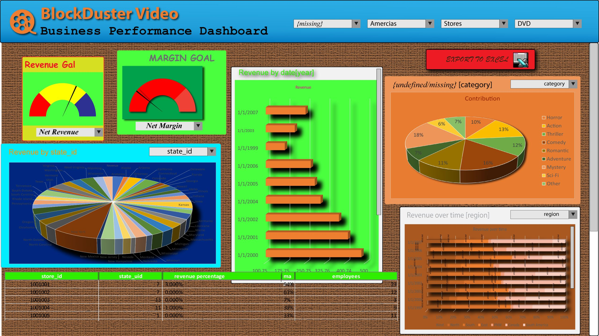
You already made a judgment
Before reading a single number
Who I Am
Styling is Not Evidence
But it influences whether people examine the evidence
People evaluate more than the data
What Viewers Use to Judge Trust
Readability
Simple Clarity Complex
Integrity & Transparency
Data Integrity Labeling Source Objectivity Intent
Quality & Design
Vis Type Visual Elements Aesthetics Professional Academic
Familiarity
With Topic With Source Unspecified
Personal
Confidence Intuition Relevance Reliability Importance
Cognition-Based Components
Readability
Simple Clarity Complex
Integrity & Transparency
Data Integrity Labeling Source Objectivity Intent
Quality & Design
Familiarity
Personal
Affective-Based Components
Readability
Integrity & Transparency
Quality & Design
Vis Type Visual Elements Aesthetics Professional Academic
Familiarity
With Topic With Source Unspecified
Personal
Confidence Intuition Relevance Reliability Importance
Two Design Choices With a Big Impact

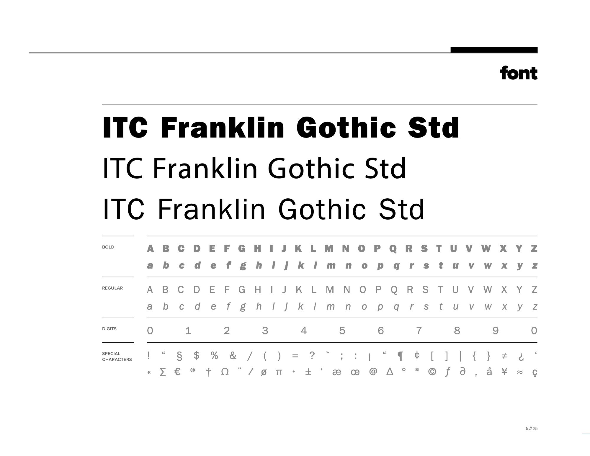
Color Shapes Attention and Tone
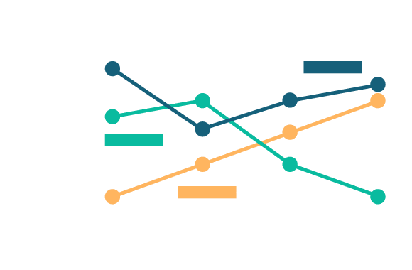
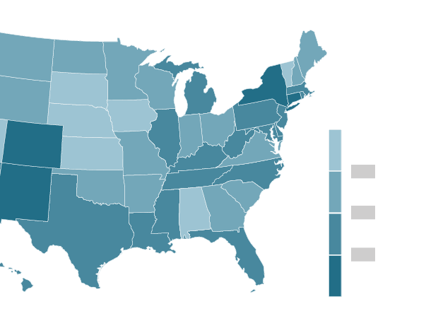
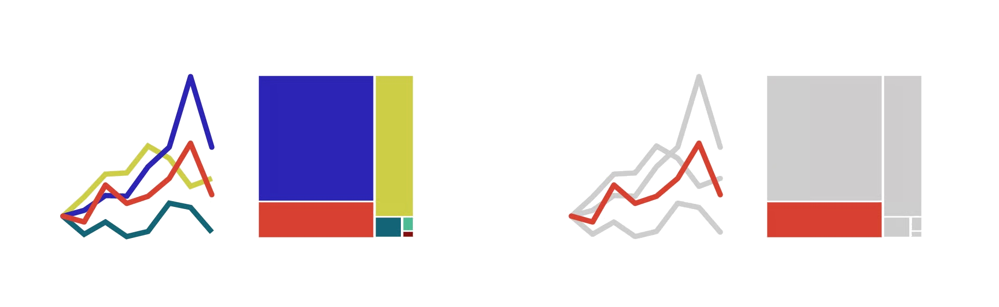
Color Shapes Attention and Tone
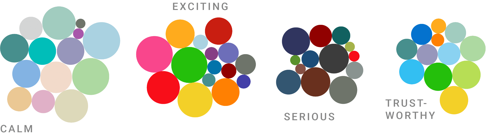
Typography Shapes Hierarchy and Voice
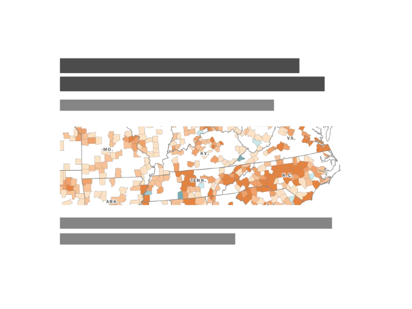
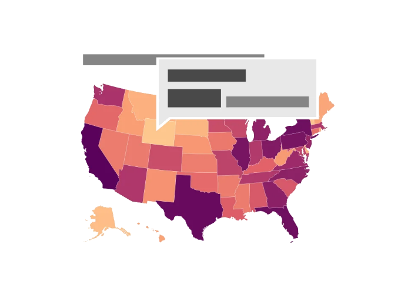
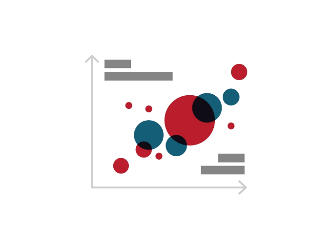
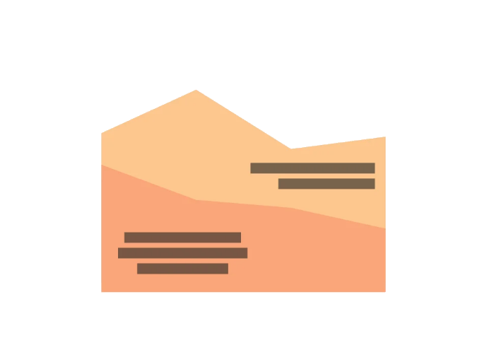
Typography Shapes Hierarchy and Voice
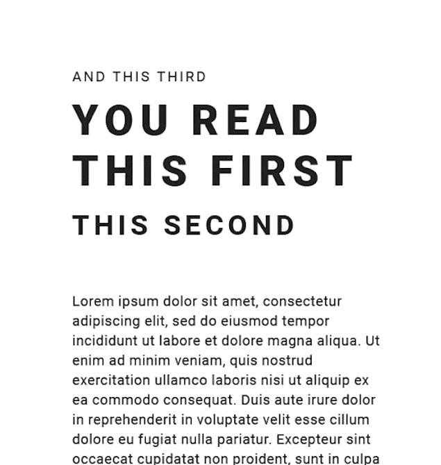
Together Color and Typography Shape the First Impression
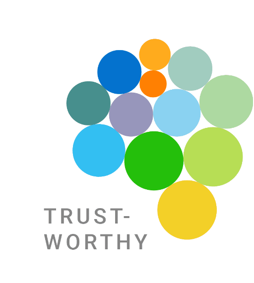
You Don’t Need to Start From Scratch
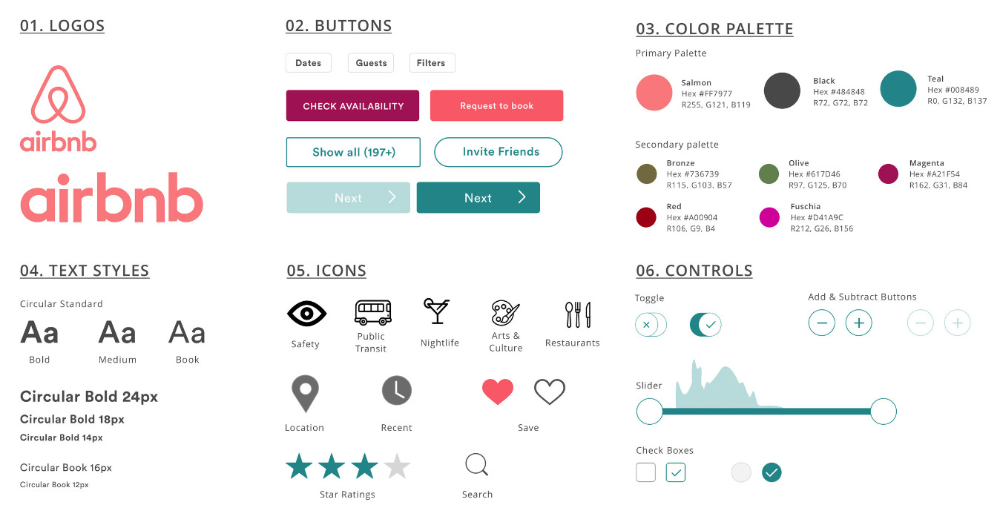
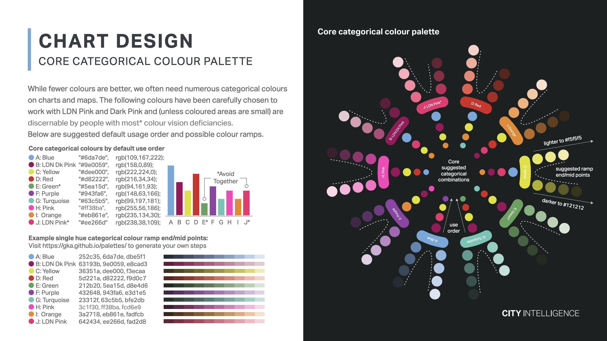
Bootstrap Is Already Doing More Than You Think

But a Good Default Is Still a Default
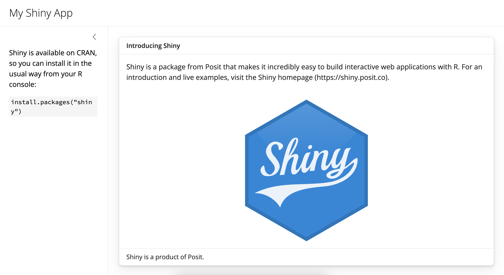
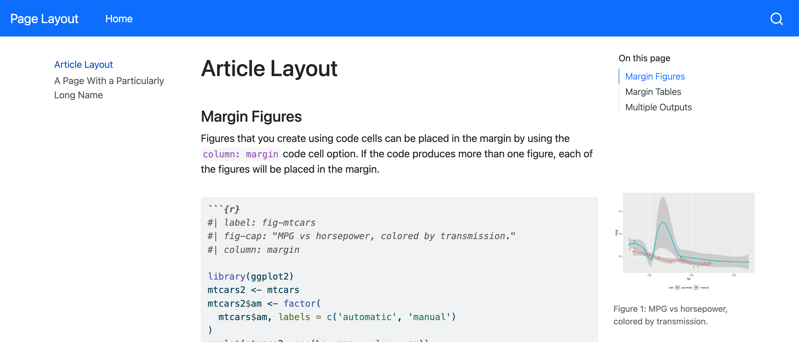
Bootswatch Gives Us a Better Starting Point
Possibilities of Bootswatch


Applying Bootswatch Themes
A Preset Is a Starting Point
Make Those Choices Reusable

The Importance of Brand Recognition

Brand Recognition: Color


Brand Recognition: Font

Brand.yml File
(extend code window to display all text)
meta:
name: shelbylevel
link: https://www.shelbylevel.org
color:
palette:
deep-jade: "#254D56"
faded-jade: "#45767a"
faded-jade-10: "#ecf1f2"
gulfstream: "#7fa6ad"
edgewater: "#d3dfdd"
boulder: "#727E70"
spring-rain: "#b2c5b4"
almond-dust: "#B8AEA8"
storm-cloud: "#64635E"
plum-crazy: "#59224A"
foreground: $brand-deep-jade # main text color
background: $brand-faded-jade-10 # background
primary: "#45767a" # primary brand color
secondary: "#7fa6ad" # secondary accent
tertiary: "#a2bbbd" # tertiary accent
success: "#727E70" # success states
info: "#b2c5b4" # info messages
warning: "#B8AEA8" # warnings
danger: "#6f4a64" # errors/danger
light: "#ecf1f2" # light backgrounds
dark: "#64635E" # dark elementsApply brand.yml
(add visual demo)
One Brand Across Multiple Products
(add visual demo)
Styling Becomes a System
Remember This One?
First impressions are not the whole story
But they can determine whether someone stays long enough to learn the rest
Talk Materials and Additional Resources
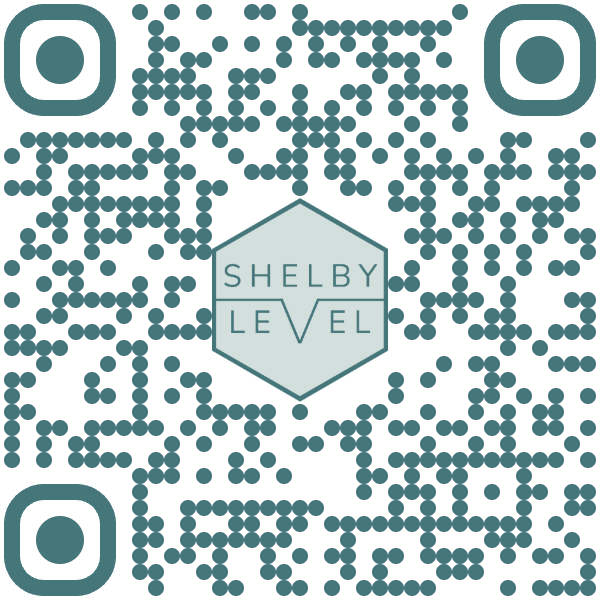